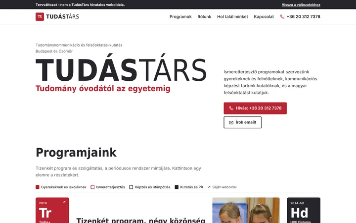
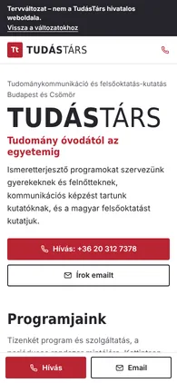
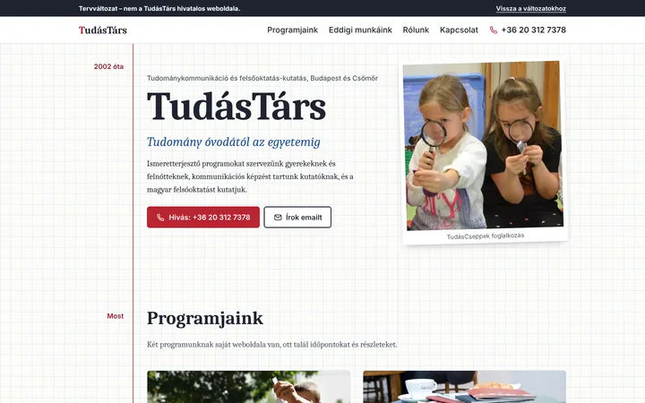
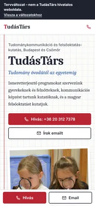
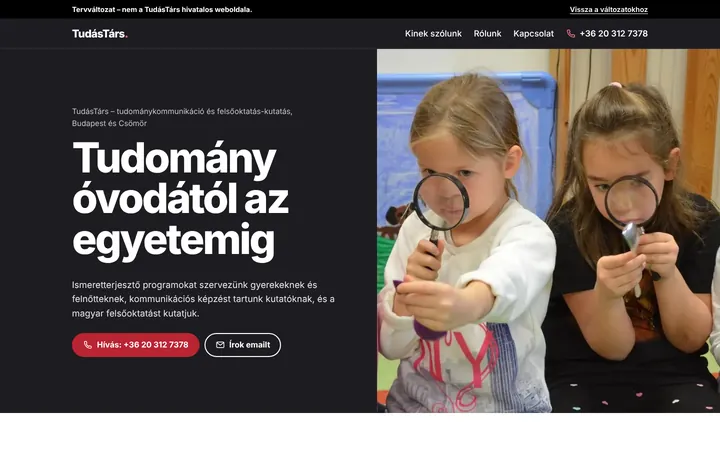
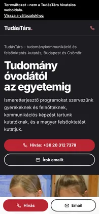
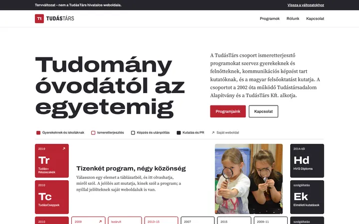
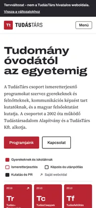

-


1. változat
Periódusos rendszer
A tetszett táblázat továbbvitele a logó piros és grafit színeivel. Egy elemre kattintva megjelenik a program leírása és a saját oldala; mobilon a leírás a képernyő tetejére tapad, amíg a táblázatot görgeti.
Megnézem az 1. változatot -


2. változat
Kockás füzet
Iskolai füzetlap piros margóval. Elöl a két ma is futó program és a szolgáltatások, utána időrendben minden, amit 2002 óta csináltak, az évszámok a margóban.
Megnézem a 2. változatot -


3. változat
Két ajtó
Sötét, fotós nyitókép, utána két ajtó: gyerekeknek és érdeklődőknek, illetve kutatóknak és intézményeknek. Mindenki először a neki szóló programokat látja.
Megnézem a 3. változatot -


Előző kör
Periódusos rendszer, első változat
Amit legutóbb láttak, a visszajelzés utáni színekkel. Saját betűtípusokkal és egy kis JavaScripttel készült, ezért szélesebb a fejléce és animált a táblázata.
Megnézem az előző változatot
Ami mindegyikben ugyanaz
- A tartalom: bemutatkozás, programok, Rólunk, elérhetőség. Az elavult események, blog és partnerlogók kimaradtak.
- A Tudás+Részecskék és a TudásPresszó a saját weboldalára visz tovább.
- Mobilon az alján mindig ott a Hívás és az Email gomb.
- Minden szakasz alatt jelölhetik, mi tetszik, és mit csinálnának másképp; a lap alján összegyűjtöm.
- A keresők nem indexelik, és belépőkód védi, amíg nem döntenek.